The Big Picture
Today (Mon Week 2), we opened class with a bit more logistics, discussing where we'd hold lectures (Mon and Wed in 60-101, Fri in McCollough 122), as well as what textbooks we'd use:
Reif's Fundamentals of Statistical and Thermal Physics – Main text, for Boltzmann equation and near-equilibrium dynamics.
Kadanoff's Statistical Physics: Statics, Dynamics and Renormalization – Suppl. text, for Ising Model and renormalization group.
Chaikin and Lubensky's Principles of Condensed Matter Physics – Suppl. text, for other stuff.
It sounds like we'll be covering all sorts of topics in this class. I'm curious if we'll manage to tie it all together coherently, or if it's just going to be a ‘‘taste’’ of many different topics.
Quantum Statistical Mechanics
Last time in class, we sort of dived right away into solving the 1D Ising Model, but we didn't get talk much about the big picture of what exactly we were doing or why we were doing it.
To help us understand why we wanted to calculate certain quantities, Prof. Kivelson explained to us the general framework of quantum statistical mechanics – the way to start with the description of a physical system and end with macroscopic observables that we can measure.
So, what steps are involved in understanding the thermodynamic behavior of a system?
Say we have a quantum mechanical system with Hamiltonian 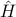, and we wish to find its thermodynamic properties in the canonical ensemble.
Diagonalize the Hamiltonian to find a basis of energy eigenstates. Let's label these states as 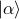 and call their corresponding energies 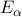.
Calculate the canonical partition function 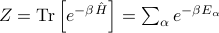, where
 is the inverse temperature 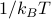. Note that we can write
is the inverse temperature 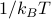. Note that we can write  either abstractly as the trace of the thermal density matrix, or explicitly as a sum over the energy eigenstates.
either abstractly as the trace of the thermal density matrix, or explicitly as a sum over the energy eigenstates.Find the free energy 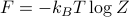. Remember that the derivatives of the free energy w.r.t. various parameters tells us thermodynamic quantities; for instance, the derivative w.r.t. the external field
 tells us the magnetization 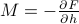.
tells us the magnetization 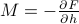.
From these quantities, we can also compute the ensemble averages of any quantum mechanical observable 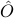 by computing
where again we can write 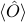 either as an abstract trace against the observable or as a concrete sum over energy states.
Using the same method, we can also calculate correlation functions such as 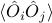, which could represent a variety of things:
If 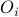 and 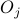 represent local observables at different points in space 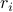 and 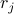, this would be a spatial correlation function of the form 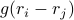;
If and represent observables at different times and 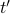, this would be a dynamical correlation function of the form 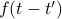;
If and were the same, then 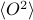 would tell you about the equilibrium fluctuations of that observable.
I realize these explanations are pretty dry and unenlightening; if time allows, I'll come back later and elaborate a bit more.
Game Plan for Solving Ising Model
Now that we knew why we wanted to calculate certain things, we went on to explicitly solve the 1D Ising Model.
Remember that the first step is to compute the partition function, which requires us to sum over all the energy states. This is a bit of a hassle for us, since for a 1D Ising Model with  sites, we need to sum over all the 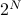 possible states. As we take the thermodynamic limit 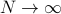, there will just be too many terms to add up, so as Prof. Kivelson says, we'll need to be clever.
sites, we need to sum over all the 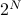 possible states. As we take the thermodynamic limit 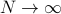, there will just be too many terms to add up, so as Prof. Kivelson says, we'll need to be clever.
Here is our game plan:
Draw a picture to gain some physical intuition (we didn't do this in class!!)
Rewrite the Hamiltonian as a sum over bonds (rather than sites AND bonds)
Zoom in on a particular site
 and its neighboring bonds
and its neighboring bondsWrite down a transfer matrix which represents site
(or bond ? I haven't fully understood yet…)Key step – Notice that summing over 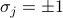 looks an awful lot like contracting over a shared index, a.k.a. matrix multiplication.
Rewrite the entire sum as the trace of a bunch of transfer matrices multiplied together.
Profit!?
We went through everything again in class on Wednesday. Here are my detailed notes!